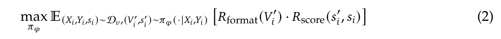
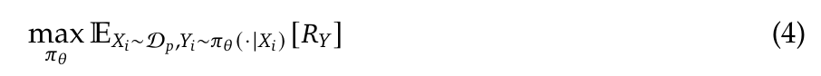
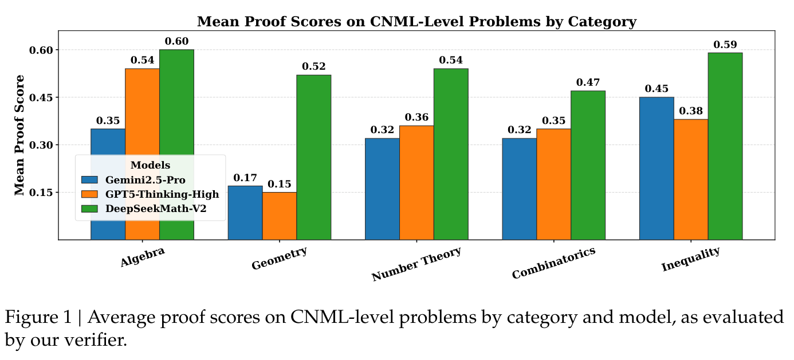
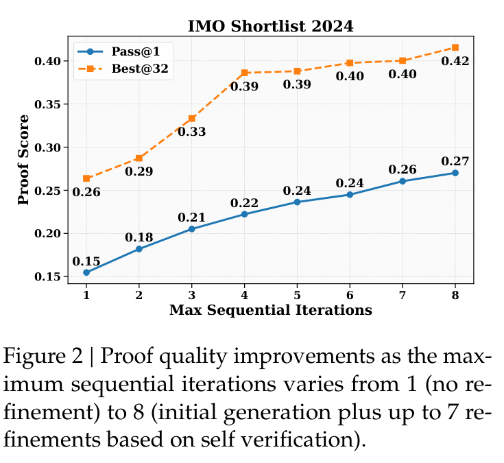
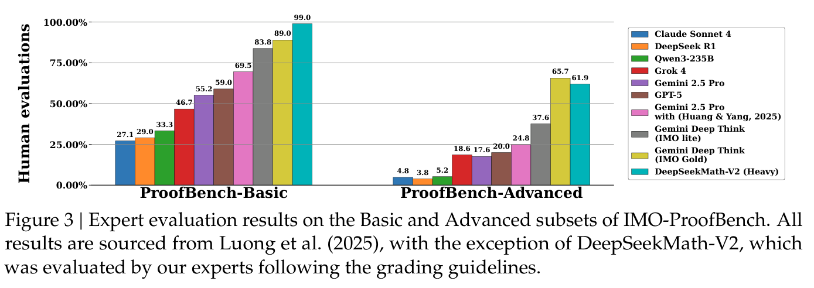
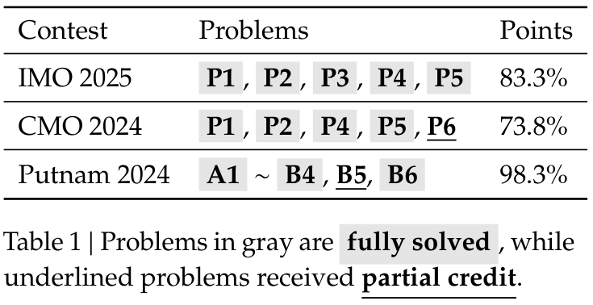

DeepSeek-AI
zhihongshao@deepseek.com
https://github.com/deepseek-ai/DeepSeek-Math-V2
LLM 在数学推理方面取得了显著进展；数学推理是 AI 的重要试验场，如果进一步发展，可能对科学研究产生影响。通过使用奖励正确最终答案的强化学习来扩展推理能力，LLM 在一年内从表现不佳发展到在 AIME 和 HMMT 等定量推理竞赛中达到饱和。然而，这种方法存在根本性局限。追求更高的最终答案准确率并不能解决一个关键问题：正确答案并不保证正确推理。此外，定理证明等许多数学任务要求严谨的逐步推导，而不是数值答案，因此最终答案奖励并不适用。为了推进深度推理的极限，我们认为有必要验证数学推理的全面性与严谨性。自验证对于扩展测试时计算量尤其重要，特别是面对没有已知解答的开放问题。为实现可自验证的数学推理，我们研究如何训练一个准确、忠实的基于 LLM 的定理证明验证器。随后，我们以验证器作为 RM 训练证明生成器，并激励生成器在最终完成证明之前，尽可能发现并解决自己证明中的问题。为了在生成器越来越强的过程中维持生成与验证之间的能力差距，我们提出扩大验证计算量，自动标注新的难以验证的证明，创建训练数据以进一步改进验证器。最终得到的模型 DeepSeekMath-V2 展现出强大的定理证明能力：在扩大测试时计算量后，在 IMO 2025 和 CMO 2024 上取得金牌水平的成绩，并在 Putnam 2024 上取得接近满分的 118/120。虽然仍有大量工作有待完成，这些结果表明，可自验证的数学推理是一条可行的研究方向，可能有助于开发能力更强的数学 AI 系统。
针对数学推理的传统强化学习（RL）方法，根据 LLM 对定量推理问题预测的最终答案是否与标准答案一致来给予奖励（Guo et al., 2025）。这种方法足以让前沿 LLM 在主要评估最终答案的数学竞赛中达到饱和，例如 AIME 和 HMMT。然而，这种奖励机制存在两个根本性局限。首先，它是推理正确性的一个不可靠替代指标：模型可能通过有缺陷的逻辑或碰巧相互抵消的错误得到正确答案。其次，它（接下一页）
* 核心贡献者。
† 本工作在 DeepSeek-AI 实习期间完成。
（接上一页）不适用于定理证明任务，因为这类问题可能不要求生成数值形式的最终答案，而是以严谨推导为主要目标。
因此，使用此类最终答案奖励在定量推理问题上训练的 LLM，仍经常生成数学上无效或逻辑上不一致的自然语言证明。此外，这种训练方法并不会自然培养模型验证证明有效性的能力：它们的误报率很高，即使错误证明包含明显逻辑缺陷，也常常声称这些证明是有效的。
自然语言定理证明中缺少生成与验证之间的能力差距，阻碍了进一步改进。为解决这一问题，我们提出发展 LLM 的证明验证能力。我们的方法受到以下几个关键观察的启发：
我们认为，可以训练 LLM 在没有参考解答的情况下找出证明中的问题。这样的验证器能够实现一个迭代改进循环：（1）利用验证反馈优化证明生成；（2）扩大验证计算量，自动标注难以验证的新证明，从而创建训练数据以改进验证器本身；（3）利用增强后的验证器进一步优化证明生成。此外，可靠的证明验证器使我们能够教会证明生成器像验证器一样评估证明。这使证明生成器能够迭代地完善证明，直到再也无法找出或解决任何问题。从本质上说，我们让模型明确知道自身的奖励函数，并使其能够通过审慎推理而非盲目试错来最大化奖励。
我们基于 DeepSeek-V3.2-Exp-Base（DeepSeek-AI, 2025）开发了 DeepSeekMath-V2，这是一个针对自然语言定理证明优化的 LLM，展现了可自验证的数学推理能力。我们的模型能够评估并迭代改进自身证明，在 IMO 2025 和 CMO 2024 等顶级高中数学竞赛中达到金牌水平。在 Putnam 2024 本科生竞赛中，它取得 118/120 分，超过人类参赛者获得的最高分 901。
我们制定了用于证明评估的高层次评分规则 \(I_{v}\)（见附录 A.2），目的是训练验证器按照这些规则评估证明，模仿数学专家的评估过程。具体而言，给定问题 \(X\) 和证明 \(Y\)，验证器 \(\pi _{\phi}(\cdot |X,Y,I_{v})\) 被设计为生成一份证明分析：先总结发现的问题（如果存在），然后按照三个等级给出评分：对完整、严谨且所有逻辑步骤都有明确依据的证明给 1 分；对整体逻辑正确但有小错误或细节省略的证明给 0.5 分；对含有致命逻辑错误或关键缺漏、存在根本缺陷的证明给 0 分。
我们通过以下过程构建初始训练数据：
这一过程产生了初始 RL 数据集 \(D_{v} = \{(X_{i},Y_{i},s_{i})\}\)，其中每个样本由问题 \(X_{i}\)、证明 \(Y_{i}\) 和总体证明评分 \(s_{i} \in \{0,0.5,1\}\) 构成。
我们以 DeepSeek-V3.2-Exp-SFT 的一个版本为基础；该版本在数学和代码相关推理数据上经过 SFT。我们使用强化学习训练模型生成证明分析，并使用两种奖励成分：
Here is my evaluation of the solution:，以及在 Based on my evaluation, the final overall score should be: 之后是否存在包含在 \boxed{} 中的分数，要求模型同时生成发现问题的总结和证明评分。Rscore(s′i,si) = 1 − |s′i − si| （1）
训练验证器的 RL 目标为：

其中 \({V'}_{i}\) 表示验证器的最终回复，\({s'}_{i}\) 是从中提取出的证明评分。
第 2.1.1 节描述的方法通过 RL 训练证明验证，使预测的证明评分与专家标注保持一致，但并不直接监督所发现的问题本身。这会造成一个关键漏洞：训练过程中，在评估有缺陷的证明（\(s_{i} < 1\)）时，验证器可以一边臆造不存在的问题，一边预测正确的评分并获得全部奖励，从而破坏其可信度。
为解决这个问题，我们引入元验证：一个二次评估过程，用于判断验证器发现的问题是否确实存在，以及根据评估规则 \(I_{v}\)，这些问题是否在逻辑上足以支持所预测的证明评分。完整的元验证规则 \(I_{mv}\) 详见附录 A.3。
2 https://artofproblemsolving.com/community/c13_contest_collections
我们使用 RL 训练了专门的元验证器来执行这一评估。通过将元验证器的反馈纳入验证器训练，我们可以提高验证器发现问题时的忠实性。
利用训练好的元验证器 \(\pi _{\eta}\)，我们将元验证反馈整合进奖励函数，以增强验证器训练：
RV = Rformat · Rscore · Rmeta （3）
其中 \(R_{meta}\) 是元验证器给出的质量评分。
我们在验证数据集 \(D_{v}\) 和元验证数据集 \(D_{mv}\) 上共同训练增强后的验证器；在 \(D_{mv}\) 上使用与元验证器训练相同的奖励机制。得到的模型能够同时执行证明验证和元验证任务。
在 \(D_{v}\) 的验证集划分上，验证器证明分析的平均质量评分（由元验证器评估）从 0.85 提升至 0.96，同时证明评分预测的准确率保持不变。
以验证器 \(\pi _{\phi}\) 作为 GenRM，我们训练证明生成器 \(\pi _{\theta}(\cdot |X)\)，其 RL 目标为：

其中 \(R_{Y}\) 是 \(\pi _{\phi}(\cdot |X_{i},Y_{i},I_{v})\) 产生的证明评分。
当证明生成器无法一次生成完全正确的证明时（对于 IMO 和 CMO 等竞赛中的困难问题，这很常见），迭代验证与改进可以提升结果。这涉及用外部验证器分析证明，并通过提示让生成器解决发现的问题。
然而，我们观察到一个关键局限：当提示生成器一次性生成并分析自己的证明时，即使外部验证器（接下一页）
（接上一页）能够轻易发现缺陷，生成器也倾向于声称证明正确。换言之，虽然生成器可以根据外部反馈改进证明，但它无法像专门的验证器那样严谨地评估自己的工作。
这一观察促使我们赋予证明生成器真正的验证能力。训练时，我们提示生成器 \(\pi _{\theta}\) 先生成证明 \(Y\)，再生成自我分析 \(Z\)，自我分析遵循与验证器相同的格式和评分规则 \(I_{v}\)（见附录 A.1）。我们把自我分析中预测的证明评分记为 \(s\)′。
为确保自我评估忠实可靠，我们使用验证器 \(\pi _{\phi}\) 评估这两个部分：证明 \(Y\) 获得评分 \(R_{Y} = s\)，自我分析 \(Z\) 获得元验证评分 \(R_{meta}(Z) =\) ms。奖励函数结合这两项评估：
R = Rformat(Y,Z) · (α · RY + β · RZ) （5）
RZ = Rscore(s′,s) · Rmeta(Z) （6）
其中 \(R_{format}(Y,Z)\) 检查证明和自我分析是否都遵循指定格式，\(R_{score}(s\)′,\(s\)) 奖励准确的自我评估。我们设定 \(\alpha = 0.76\)、\(\beta = 0.24\)。这种奖励结构提供了以下激励：
证明验证器和生成器构成协同循环：验证器改进生成器，而随着生成器改进，它会产生挑战验证器当前能力的新证明。这些具有挑战性的案例（验证器可能无法在单次尝试中发现其中的问题）成为增强验证器自身能力的宝贵训练数据。
为重新训练并改进验证器，我们需要带有正确性标签的新生成证明数据。人工标注虽然直接，但随着问题变难、错误变得更加隐蔽，会越来越耗时。为提高标注效率，我们为每个证明生成多份验证器分析，呈现潜在问题供人类审查。
在这种 AI 辅助标注过程中，我们认识到两点事实，使进一步提高自动化程度成为可能：
基于这些观察，我们开发了以下自动标注过程：
在最后两次训练迭代中，这条完全自动化的流水线彻底取代了人工标注。质量检查确认，自动标注与专家判断具有良好的一致性。

我们使用 Group Relative Policy Optimization（GRPO）（Shao et al., 2024）进行强化学习，按照第 2 节所述，迭代优化证明验证与生成能力。在每次迭代中，我们先优化证明验证，然后从验证器 checkpoint 初始化证明生成器，并优化其证明生成能力。从第二次迭代开始，证明验证器使用一个 checkpoint 初始化；该 checkpoint 通过拒绝采样微调整合了前一次迭代中的验证与生成能力。
我们在以下定理证明基准上评估最终的证明生成器：
内部 CNML 难度问题：91 道定理证明题，涵盖代数（13 道）、几何（24 道）、数论（19 道）、组合（24 道）和不等式（11 道），难度与全国高中数学联赛（CNML）题目相当。
竞赛问题：
我们首先评估模型在不进行迭代改进的情况下生成正确证明的能力。在内部题目上，我们为每个受评模型、每道题生成 8 个证明样本。证明正确性通过最终验证器产生的 8 份验证分析进行多数投票衡量。如图 1 所示，在 CNML 难度问题的所有类别（代数、几何、数论、组合和不等式）中，DeepSeekMath-V2 均持续优于 GPT-5-Thinking-High（OpenAI, 2025）和 Gemini 2.5-Pro（DeepMind, 2025），展现出跨领域的更强定理证明能力。

对于 IMO 和 CMO 等竞赛中的困难问题，模型通常无法在 128K token 限制内，一次性生成全面、严谨的证明。发生这种情况时，我们的证明生成器通过自验证认识到自己的证明无效，但缺少足够的上下文长度，无法在单次尝试中解决所有发现的问题。
为了探索更长上下文与自验证如何提高证明质量，我们评估了结合自验证的顺序改进。这种方法先生成带有自我分析的证明，然后使用生成器之前的输出反复重新提示它（改进提示见附录 A.4），使它能够解决发现的问题。该过程持续进行，直到生成器给自己打出满分，或达到顺序尝试次数的上限。
图 2 展示了在 IMO Shortlist 2024 题目上，通过顺序改进提升证明质量的情况。对于每道题，我们启动 32 条独立的改进线程。证明正确性通过最终验证器产生的 32 份验证分析进行多数投票衡量。图 2 报告两个指标：（1）Pass@1，即各线程最终（接下一页）
（接上一页）证明的平均评分；（2）Best@32，即根据所有线程中的自评分数选出的每道题最佳证明的评分。通过自我选择得到的最佳证明，其验证评分显著高于线程平均值，表明我们的生成器能够准确评估证明质量。此外，随着最大顺序尝试次数增加，Pass@1 显著提升，说明自验证能够有效指导迭代改进。这些结果证实，我们的生成器能够可靠区分高质量证明和有缺陷的证明，并利用这种自我认知系统性地改进数学推理。


为了解决最困难的问题，我们同时扩大验证和生成计算量：使用大量验证来发现细微问题，并通过并行生成探索不同的证明策略。
我们的方法为每道题维护一个候选证明池，初始包含 64 个证明样本，并为每个样本生成 64 份验证分析。在每次改进迭代中，我们根据平均验证评分选出分数最高的 64 个证明，并分别为每个证明随机配对 8 份分析，优先选择发现了问题的分析（评分为 0 或 0.5）。每个“证明—分析”对用于生成一个改进后的证明，随后更新候选池。该过程最多持续 16 次迭代，或在某个证明成功通过全部 64 次验证尝试时结束；这表明对其正确性具有较高置信度。所有实验都使用同一个模型，即最终的证明生成器，它同时执行证明生成和验证。
为验证结果，数学专家评估了评分最高的证明。如表 1 所示，我们的方法解决了 IMO 2025 的 6 道题中的 5 道，以及 CMO 2024 的 4 道题，并在另 1 道题上获得部分分数，在这两项顶级高中竞赛中均达到金牌水平。在最重要的本科生数学竞赛 Putnam 2024 上，我们的模型完整解决了 12 道题中的 11 道，剩下 1 道题仅有小错误，得到 118/120 分，超过人类最高分 90。图 3 展示 IMO-ProofBench 上的结果。我们的方法在基础集上优于 DeepMind 的 DeepThink（IMO Gold），在高级集上保持竞争力，同时大幅超过所有其他基线。我们观察到，最困难的 IMO 级别问题对我们的模型而言仍具有挑战性。
值得注意的是，对于没有完全解决的问题，我们的生成器通常能发现自身证明中确实存在的问题；而完全解决的问题则通过全部 64 次验证尝试。这表明，我们可以成功训练基于 LLM 的验证器，评估此前被认为难以自动验证的证明。在验证器指导下扩大测试时计算量，我们的模型解决了人类参赛者需要花费数小时才能解决的问题。
推理模型（OpenAI, 2024；Guo et al., 2025）在一年内就在 AIME 和 HMMT 等定量推理基准上达到饱和。这种快速进步部分归功于明确的评估标准：如果我们只关心最终答案，那么定量推理就容易验证。然而，这种最终答案指标不适用于定理证明；定理证明通常不需要数值答案，而要求严谨的逐步推导。非形式化数学证明长期以来被认为难以自动验证，缺少可靠的证明正确性评估方法。近期发展表明，这个障碍可能可以克服。Gemini-2.5 Pro 等模型已经展现出一定程度的自验证能力，能够改进自身解答以提升质量（Huang and Yang, 2025）。更显著的是，DeepMind 内部的 DeepThink 变体（Luong and Lockhart, 2025）通过纯自然语言推理在 IMO 2025 达到金牌水平，为基于 LLM 验证复杂证明的可实现性提供了存在性证明。近期研究已经开始探索推理模型能否在有参考解答和无参考解答两种情况下评估证明（Dekoninck et al., 2025；Luong et al., 2025），并取得了有希望的结果。在本工作中，我们开源 DeepSeekMath-V2 及训练方法，作为迈向可自验证数学推理的具体步骤，展示模型如何学习验证并改进自身证明。
Lean（de Moura et al., 2015）和 Isabelle（Paulson, 1994）等证明助手提供了一种可靠的证明验证方法：证明必须使用形式化语言编写，但一旦通过编译，正确性就能得到保证。AlphaProof（AlphaProof and teams, 2024；Trinh et al., 2024；Chervonyi et al., 2025）是一个专门从事形式化证明搜索的系统，在 IMO 2024 达到银牌水平，但需要大量计算。尽管使用非形式化推理指导形式化证明生成的做法已经得到广泛探索（Jiang et al., 2023），近期推理模型大幅提高了非形式化推理质量，使这种指导变得有效得多。DeepSeek-Prover-V2（Ren et al., 2025）和 Seed-Prover（Chen et al., 2025）等系统如今能够在相同计算预算内生成显著更多的有效形式化证明，其中 Seed-Prover 解决了 IMO 2025 的 6 道题中的 5 道。值得注意的是，这些结果是在没有针对定理证明任务专门优化非形式化推理部分的情况下取得的。我们认为，推进自然语言定理证明将显著造福形式化推理。我们希望为真正可靠的数学推理系统作出贡献；这样的系统将同时利用非形式化洞见和形式化保证，推动数学研究。
我们提出了 DeepSeekMath-V2，一个能够同时生成和验证数学证明的模型。通过训练模型发现自身推理中的问题，并激励其在最终完成输出之前解决这些问题，我们超越了基于最终答案的奖励所带来的局限，迈向可自验证的数学推理。我们的迭代训练过程交替改进验证能力，再利用这些能力增强生成，形成了一个可持续的循环，各部分互相推动。我们的（接下一页）
（接上一页）关键技术贡献包括：（1）训练准确、忠实的基于 LLM 的数学证明验证器；（2）使用元验证大幅减少臆造的问题，并确保验证质量；（3）激励证明生成器通过自验证最大化证明质量；（4）扩大验证计算量，自动标注越来越难以验证的证明，从而在无需人工标注的情况下改进验证器。DeepSeekMath-V2 在竞赛数学方面展现出强大表现。扩大测试时计算量后，它在 IMO 2025 和 CMO 2024 等高中竞赛中取得金牌成绩，并在本科生 Putnam 2024 竞赛中获得接近满分的成绩。这项工作表明，LLM 可以为复杂推理任务发展出有意义的自我评估能力。虽然仍面临重大挑战，我们希望这一研究方向有助于实现创建可自验证 AI 系统的目标，使其能够解决研究级数学问题。
AlphaProof and A. teams. AI 解答国际数学奥林匹克问题达到银牌标准, 2024. URL https://deepmind.google/blog/ai-solves-imo-problems-at-silver-medal-level.
L. Chen, J. Gu, L. Huang, W. Huang, Z. Jiang, A. Jie, X. Jin, X. Jin, C. Li, K. Ma, C. Ren, J. Shen, W. Shi, T. Sun, H. Sun, J. Wang, S. Wang, Z. Wang, C. Wei, S. Wei, Y. Wu, Y. Wu, Y. Xia, H. Xin, F. Yang, H. Ying, H. Yuan, Z. Yuan, T. Zhan, C. Zhang, Y. Zhang, G. Zhang, T. Zhao, J. Zhao, Y. Zhou, and T. H. Zhu. Seed-Prover：面向自动定理证明的深入而广泛的推理. CoRR, abs/2507.23726, 2025. doi: 10.48550/ARXIV.2507.23726. URL https://doi.org/10.48550/arXiv.2507.23726.
Y. Chervonyi, T. H. Trinh, M. Olsák, X. Yang, H. Nguyen, M. Menegali, J. Jung, V. Verma, Q. V. Le, and T. Luong. 使用 AlphaGeometry2 解答奥林匹克几何题达到金牌水平. CoRR, abs/2502.03544, 2025. doi: 10.48550/ARXIV.2502.03544. URL https://doi.org/10.48550/arXiv.2502.03544.
L. M. de Moura, S. Kong, J. Avigad, F. van Doorn, and J. von Raumer. Lean 定理证明器（系统描述）. 收录于 A. P. Felty 与 A. Middeldorp, 编， 自动演绎：CADE-25，第 25 届国际自动演绎会议论文集，德国柏林，2015 年 8 月 1–7 日, 《计算机科学讲义》第 9195 卷，第 378–388 页. Springer, 2015. doi: 10.1007/978-3-319-21401-6_26. URL https://doi.org/10.1007/978-3-319-21401-6_26.
G. DeepMind. Gemini 2.5 Pro, 2025. URL https://deepmind.google/models/gemini/pro.
DeepSeek-AI. DeepSeek-V3.2-Exp：通过 DeepSeek Sparse Attention 提高长上下文效率, 2025.
J. Dekoninck, I. Petrov, K. Minchev, M. Balunovic, M. T. Vechev, M. Marinov, M. Drencheva, L. Konova, M. Shumanov, K. Tsvetkov, N. Drenchev, L. Todorov, K. Nikolova, N. Georgiev, V. Kalinkova, and M. Ismoldayev. 开放证明语料库：LLM 生成数学证明的大规模研究. CoRR, abs/2506.21621, 2025. doi: 10.48550/ARXIV.2506.21621. URL https://doi.org/10.48550/arXiv.2506.21621.
D. Guo, D. Yang, H. Zhang, J. Song, P. Wang, Q. Zhu, R. Xu, R. Zhang, S. Ma, X. Bi, X. Zhang, X. Yu, Y. Wu, Z. F. Wu, Z. Gou, Z. Shao, Z. Li, Z. Gao, A. Liu, B. Xue, B. Wang, B. Wu, B. Feng,
（接上一页的 Guo et al. 参考文献作者列表）
C. Lu, C. Zhao, C. Deng, C. Ruan, D. Dai, D. Chen, D. Ji, E. Li, F. Lin, F. Dai, F. Luo, G. Hao, G. Chen, G. Li, H. Zhang, H. Xu, H. Ding, H. Gao, H. Qu, H. Li, J. Guo, J. Li, J. Chen, J. Yuan, J. Tu, J. Qiu, J. Li, J. L. Cai, J. Ni, J. Liang, J. Chen, K. Dong, K. Hu, K. You, K. Gao, K. Guan, K. Huang, K. Yu, L. Wang, L. Zhang, L. Zhao, L. Wang, L. Zhang, L. Xu, L. Xia, M. Zhang, M. Zhang, M. Tang, M. Zhou, M. Li, M. Wang, M. Li, N. Tian, P. Huang, P. Zhang, Q. Wang, Q. Chen, Q. Du, R. Ge, R. Zhang, R. Pan, R. Wang, R. J. Chen, R. L. Jin, R. Chen, S. Lu, S. Zhou, S. Chen, S. Ye, S. Wang, S. Yu, S. Zhou, S. Pan, S. S. Li, S. Zhou, S. Wu, T. Yun, T. Pei, T. Sun, T. Wang, W. Zeng, W. Liu, W. Liang, W. Gao, W. Yu, W. Zhang, W. L. Xiao, W. An, X. Liu, X. Wang, X. Chen, X. Nie, X. Cheng, X. Liu, X. Xie, X. Liu, X. Yang, X. Li, X. Su, X. Lin, X. Q. Li, X. Jin, X. Shen, X. Chen, X. Sun, X. Wang, X. Song, X. Zhou, X. Wang, X. Shan, Y. K. Li, Y. Q. Wang, Y. X. Wei, Y. Zhang, Y. Xu, Y. Li, Y. Zhao, Y. Sun, Y. Wang, Y. Yu, Y. Zhang, Y. Shi, Y. Xiong, Y. He, Y. Piao, Y. Wang, Y. Tan, Y. Ma, Y. Liu, Y. Guo, Y. Ou, Y. Wang, Y. Gong, Y. Zou, Y. He, Y. Xiong, Y. Luo, Y. You, Y. Liu, Y. Zhou, Y. X. Zhu, Y. Huang, Y. Li, Y. Zheng, Y. Zhu, Y. Ma, Y. Tang, Y. Zha, Y. Yan, Z. Z. Ren, Z. Ren, Z. Sha, Z. Fu, Z. Xu, Z. Xie, Z. Zhang, Z. Hao, Z. Ma, Z. Yan, Z. Wu, Z. Gu, Z. Zhu, Z. Liu, Z. Li, Z. Xie, Z. Song, Z. Pan, Z. Huang, Z. Xu, Z. Zhang, and Z. Zhang. DeepSeek-R1 通过强化学习激发 LLM 的推理能力. Nat., 645(8081):633–638, 2025. doi: 10.1038/S41586-025-09422-Z. URL https://doi.org/10.1038/s41586-025-09422-z.
Y. Huang and L. F. Yang. Gemini 2.5 Pro 能够在 IMO 2025 获得金牌. CoRR, abs/2507.15855, 2025. doi: 10.48550/ARXIV.2507.15855. URL https://doi.org/10.48550/arXiv.2507.15855.
A. Q. Jiang, S. Welleck, J. P. Zhou, T. Lacroix, J. Liu, W. Li, M. Jamnik, G. Lample, and Y. Wu. 起草、概述与证明：使用非形式化证明指导形式化定理证明器. 收录于 第十一届国际学习表征会议, ICLR 2023, 卢旺达基加利，2023 年 5 月 1–5 日. OpenReview.net, 2023. URL https://openreview.net/forum?id=SMa9EAovKMC.
T. Luong and E. Lockhart. 搭载 Deep Think 的高级版 Gemini 正式在国际数学奥林匹克达到金牌标准, 2025. URL https://goo.gle/imo-gold.
T. Luong, D. Hwang, H. H. Nguyen, G. Ghiasi, Y. Chervonyi, I. Seo, J. Kim, G. Bingham, J. Lee, S. Mishra, A. Zhai, C. H. Hu, H. Michalewski, J. Kim, J. Ahn, J. Bae, X. Song, T. H. Trinh, Q. V. Le, and J. Jung. 迈向稳健的数学推理. 收录于 2025 年自然语言处理经验方法会议论文集, 2025. URL https://aclanthology.org/2025.emnlp-main.1794/.
OpenAI. 学习使用 LLM 进行推理, 2024. URL https://openai.com/index/learning-to-reason-with-llms/.
OpenAI. 介绍 GPT-5, 2025. URL https://openai.com/index/introducing-gpt-5.
L. C. Paulson. Isabelle：通用定理证明器（包含 T. Nipkow 的贡献）, 《计算机科学讲义》第 828 卷. Springer, 1994. ISBN 3-540-58244-4. doi: 10.1007/BFB0030541. URL https://doi.org/10.1007/BFb0030541.
Z. Z. Ren, Z. Shao, J. Song, H. Xin, H. Wang, W. Zhao, L. Zhang, Z. Fu, Q. Zhu, D. Yang, Z. F. Wu, Z. Gou, S. Ma, H. Tang, Y. Liu, W. Gao, D. Guo, and C. Ruan. DeepSeek-Prover-V2：通过面向子目标分解的强化学习推进形式化数学推理. CoRR, abs/2504.21801, 2025. doi: 10.48550/ARXIV.2504.21801. URL https://doi.org/10.48550/arXiv.2504.21801.
Z. Shao, P. Wang, Q. Zhu, R. Xu, J. Song, M. Zhang, Y. K. Li, Y. Wu, and D. Guo. DeepSeekMath：推进开放语言模型数学推理的极限. CoRR, abs/2402.03300, 2024. doi: 10.48550/ARXIV.2402.03300. URL https://doi.org/10.48550/arXiv.2402.03300.
T. H. Trinh, Y. Wu, Q. V. Le, H. He, and T. Luong. 无需人类示范解答奥林匹克几何题. Nat., 625(7995):476–482, 2024. doi: 10.1038/S41586-023-06747-5. URL https://doi.org/10.1038/s41586-023-06747-5.
你的任务是解答给定的问题。该问题可能要求你证明一个命题，或求出一个答案。如果要求求出答案，你应该得出这个答案，并且最终解答也应该是对该答案有效性的严谨证明。 你对问题的最终解答应该极其全面且易于理解，并将按照以下评估指令评分： ```txt 以下是评估问题解答质量的指令。问题可能要求证明一个命题，或求出一个答案。如果要求求出答案，解答应该给出答案，并且也应该是对该答案有效性的严谨证明。 请评估解答，并根据以下标准评分： - 如果解答完全正确，所有步骤都正确执行并清楚展示，评分为 1。 - 如果解答总体正确，但省略了一些细节或存在小错误，评分为 0.5。 - 如果解答实际上没有解决要求的问题，包含致命错误，或有严重遗漏，评分为 0。 此外，引用任何论文中的内容都不能免除对引用内容的证明义务。当且仅当解答还给出所引用论证的有效证明时，这样的引用才是可以的；否则，如果解答省略证明，或给出的证明并非完全正确，就应按照上述标准评分，且绝不能给 1 分。 ``` 事实上，你已经具备为自己的解答评分的能力，因此，你应该仔细推理如何解答给定问题，根据指令评估自己的方法，并通过修正发现的问题改进解答，直到无法取得进一步进展。 在最终回复中，你应该先给出问题的详细解答，再给出对该解答的评估。 - 为了给出好的最终回复，你应该尽最大努力，按照上述评估指令找出自己（部分）解答中的潜在问题，并尽可能多地修正它们。 - 好的最终回复应该如实呈现你的进展，包括你能给出的最佳解答，以及对该解答的忠实评估。
- 只有当你无法在解答中找出任何问题时，才应该给它打 1 分。
- 如果你确实发现了解答中的一些问题，但尽了最大努力也无法解决，在最终回复中如实给出这些问题完全没有关系。
- 最糟糕的最终回复会给出错误解答，却谎称它正确，或者未经仔细检查错误就声称它正确。更好的回复应该如实指出解答中的错误。记住！你不能作弊！如果你作弊，我们会知道，而且你会受到惩罚！
你的最终回复应该采用以下格式：
## Solution // 你的最终解答应该以完全相同的这个 Markdown 标题开头
... // 在此给出问题的最终解答。在最终确定这里的解答之前，你应该尽最大努力按照上述评估指令优化解答质量。
## Self Evaluation // 你对上述解答的评估应该以完全相同的这个 Markdown 标题开头
Here is my evaluation of the solution: // 你的分析应该以完全相同的这句话开头
... // 在此给出你的评估。你必须详细呈现解答的关键步骤，或你曾对其正确性存疑的步骤，并明确分析每一步是否准确：对于正确步骤，解释你起初为何怀疑其正确性，以及它们为何确实正确；对于错误步骤，解释错误的原因，以及该错误对解答的影响。你应该忠实地分析自己的解答。例如，如果最终解答中存在问题，你应该指出来。
Based on my evaluation, the final overall score should be:
\\boxed{{...}} // 其中 ... 应该是根据上述评估指令得出的最终总分（只能是 0、0.5 或 1，不能包含其他内容）。只有在仔细重新检查上述自身解答之后，你才应该得出这个分数。
---
以下是你的任务输入：
## Problem
{question}
## Instruction
你的任务是评估问题解答的质量。问题可能要求证明一个命题，或求出一个（接下一页）
（接上一页）答案。如果要求求出答案，解答应该给出答案，并且也应该是对该答案有效性的严谨证明。
请评估解答，并根据以下标准评分：
- 如果解答完全正确，所有步骤都正确执行并清楚展示，评分为 1。
- 如果解答总体正确，但省略了一些细节或存在小错误，评分为 0.5。
- 如果解答实际上没有解决要求的问题，包含致命错误，或有严重遗漏，评分为 0。
- 此外，引用任何论文中的内容都不能免除对引用内容的证明义务。当且仅当解答还给出所引用论证的有效证明时，这样的引用才是可以的；否则，如果解答省略证明，或给出的证明并非完全正确，就应按照上述标准评分，且绝不能给 1 分。
请仔细推理并分析以下解答的质量，在最终回复中先给出解答质量的详细评估，再给出你的评分。因此，你的回复应该采用以下格式：
Here is my evaluation of the solution:
... // 在此给出你的评估。你必须详细呈现解答的关键步骤，或你曾对其正确性存疑的步骤，并明确分析每一步是否准确：对于正确步骤，解释你起初为何怀疑其正确性，以及它们为何确实正确；对于错误步骤，解释错误的原因，以及该错误对解答的影响。
Based on my evaluation, the final overall score should be:
\\boxed{{...}} // 其中 ... 应该是根据上述标准得出的最终总分（只能是 0、0.5 或 1，不能包含其他内容）。
---
以下是你的任务输入：
## Problem
{question}
## Solution
{proof}
给你一个“问题”、“解答”和“解答评估”，你需要判断这个“解答（接下一页）
（接上一页）评估”是否合理。
首先，“解答评估”是通过使用以下规则提示验证器而生成的，用于评估“解答”的质量（这些不是你需要遵循的规则）：
```
请评估解答，并根据以下标准评分：
- 如果解答完全正确，所有步骤都正确执行并清楚展示，评分为 1。
- 如果解答总体正确，但省略了一些细节或存在小错误，评分为 0.5。
- 如果解答实际上没有解决要求的问题，包含致命错误，或有严重遗漏，评分为 0。
此外，引用任何论文中的内容都不能免除对引用内容的证明义务。当且仅当解答还给出所引用论证的有效证明时，这样的引用才是可以的；否则，如果解答省略证明，或给出的证明并非完全正确，就应按照上述标准评分，且绝不能给 1 分。
```
接下来，我将介绍你分析“解答评估”质量时需要遵循的规则：
1. 你的任务是分析“解答评估”。你不需要解答“问题”，也不需要严格判断“解答”是否准确。你唯一的任务是严格遵循以下规则，评估“解答评估”是否合理。
2. 你需要从三个方面分析“解答评估”的内容：
步骤复述：在“解答评估”中，可能会复述“解答”的某些行为。你需要回到“解答”原文，检查“解答”是否确实存在“解答评估”所提到的这些行为。
缺陷分析：“解答评估”可能会指出“解答”中的错误或缺陷。你需要仔细分析所提到的错误与缺陷是否确实成立。
表述分析：“解答评估”的表述是否准确。
评分分析：“解答评估”给出的最终分数是否与它发现的缺陷相匹配。你需要根据上述评分规则进行分析。
3. 最重要的部分是**缺陷分析**：在这一部分，你的核心任务是检查“解答评估”所指出的“解答”错误或缺陷是否合理。换言之，“解答评估”中关于“解答”的任何正面内容，无论是否合理，都不属于你的评估范围。 - 例如：如果“解答评估”说“解答”中的某个结论是正确的，但实际上这个结论是错误的，你不需要在意这一点。所有被“解答评估”认为正确的部分都不属于你的评估范围。 - 具体而言：如果“解答评估”认为“解答”完全准确，而且没有发现任何错误或缺陷，那么无论“解答”本身实际上是否准确，即使存在明显错误，你仍应该认为它对错误的分析是合理的。 **重要的是**，对于“解答评估”发现的缺陷，你需要同时分析两点： - 这个缺陷是否确实存在。 - “解答评估”对这个缺陷的分析是否准确。 这两个方面构成缺陷分析。 4. 关于**表述分析**，如果“解答评估”存在某些表述错误，即使是细节中的小错误，你也需要找出来。但是请注意，把“解答”中的错误步骤判定为正确步骤，并不构成**表述错误**。 实际中，表述错误包括但不限于： - 如果“解答评估”判定“解答”中的某些推理步骤错误，就不能进一步指出依赖这些推理步骤的后续结论是错误的，而只能指出这些后续结论“没有得到严谨证明”。 - “解答评估”产生的拼写错误和计算错误。 - 对“解答”内容的不准确复述。 5. 最后，你需要在输出中给出对“解答评估”的分析，并根据以下规则为其质量评分： 首先，如果“解答评估”发现的缺陷中，至少有一个缺陷不合理，那么你只需要进行**缺陷分析**： - 如果“解答评估”发现的全部缺陷都不合理，应该给它评分 \(0\)。
- 如果“解答评估”发现的缺陷中，有些合理、有些不合理，那么应该给它评分 \(0.5\)。
接下来，如果“解答评估”没有指出任何错误或缺陷，或者它发现的所有缺陷都合理，那么你应该进行以下操作：
- 分析“解答评估”中是否存在“表述错误”（**表述分析**），或者“解答评估”是否按照“解答评估”的规则给出了错误评分（**评分分析**）。如果是，应该给“解答评估”评分 \(0.5\)；如果否，应该给它评分 \(1\)。
你的输出应该遵循以下格式：
Here is my analysis of the "solution evaluation":
... // 在此给出你的分析。
Based on my analysis, I will rate the "solution evaluation" as:
\\boxed{{...}} // 其中 ... 应该是根据上述标准给出的“解答评估”数值评分（只能是 0、0.5 或 1，不能包含其他内容）。
---
以下是你的任务输入：
## Problem
{question}
## Solution
{proof}
## Solution Evaluation
{proof analysis}
{proof_generation_prompt}
## Candidate Solution(s) to Refine
以下是一些解答样本及其正确性评估。你应该通过解决评估中指出的问题，或复用解答样本中提到的有希望的思路，或同时采用这两种方式，给出一个更好的解答。
{proof}
{proof analyses}
## Final Instruction
你的最终回复应该遵循上述格式，包含一个 `## Solution` 部分，之后接一个 `## Self Evaluation`（接下一页）
（接上一页）部分。